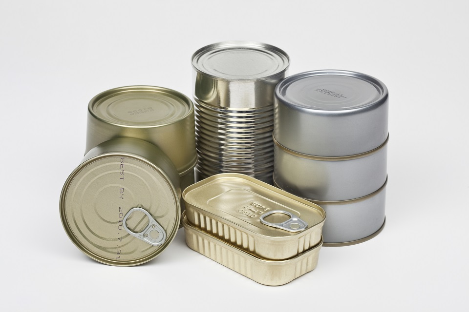
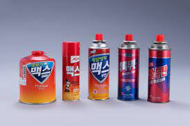
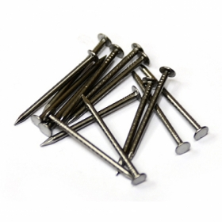
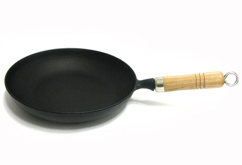

금속 캔

- 내용물을 비우고 물로헹구는등 이물질을 제거 해서 배출
- 금속캔과 다른 재질은 모두 제거한 후 배출

- 가스용기는 통풍이 잘되는 장소에서 노줄을 눌러 내용물을 모두 제거한 후 배출
고철 류
고철류나 비철금속류가 여기에 속하는데 이물질이 섞이지 않도록 하고
봉투에 넣거나 끈으로 묶어서 한꺼번에 배출하도록 한다.
참고로 프라이팬이나 냄비등은 플라스틱으로 손잡이가 돼있는경우가 많기
때문에 따로 분리해 서 버리도록 한다.

